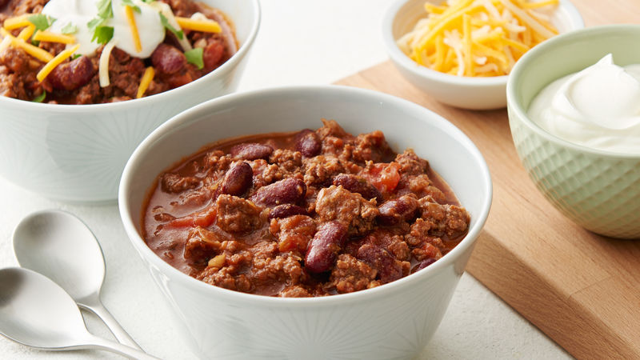

Home
The Greatest Chili in the World.

Recipe Description
This chili originated from when I lived at my first apartment in Balston Spa New York. The idea was to make the most food possible for the least cost. It ended up being good enough to optimize later (although a little more expensive). I love this recipe because it has so many strange ingredients that you would not expect to find in chili, and makes the most savory chili ever.
Ingredients
- One can of black beans
- One large can of chili beans
- One jar of your favorite spaghetti sauce
- One large can of fire roasted tomatoes
- One can of corn
- One can of green chilles
- One white onion
- Garlic, to your liking
- Two bell peppers, I usually do one green and one yellow or orange for color
- One pound of one of the following: ground beef, your choice of higher cut beef, mushrooms, sweet potatoes
- Two packets of pre-mixed chili seasoning
- 4oz Cream Cheese
- One Carton of beef broth
- One tablespoon of dark roast coffee grounds
- One beer of your choice
- Cumin, chili powder, garlic salt, and black pepper to taste
- One lemon or two limes
Get Cookin'
- Read all steps of the recipe prior to starting.
- In a large pot or slow cooker, empty all canned goods and start adding seasonings.
- Dice up all of the fresh produce and sautee in butter or olive oil
- Add sauteed produce to the chili pot.
- Add the coffee grounds and beer to the chili pot.
- Cook your beef and add to the pot.
- Cut your citrus fruit in half and juice them into the chili. Add the rhines afterward.
- Keep on low heat for several hours, the longer the better and stirring occasionally. Keep adding spices as you see fit.
Home